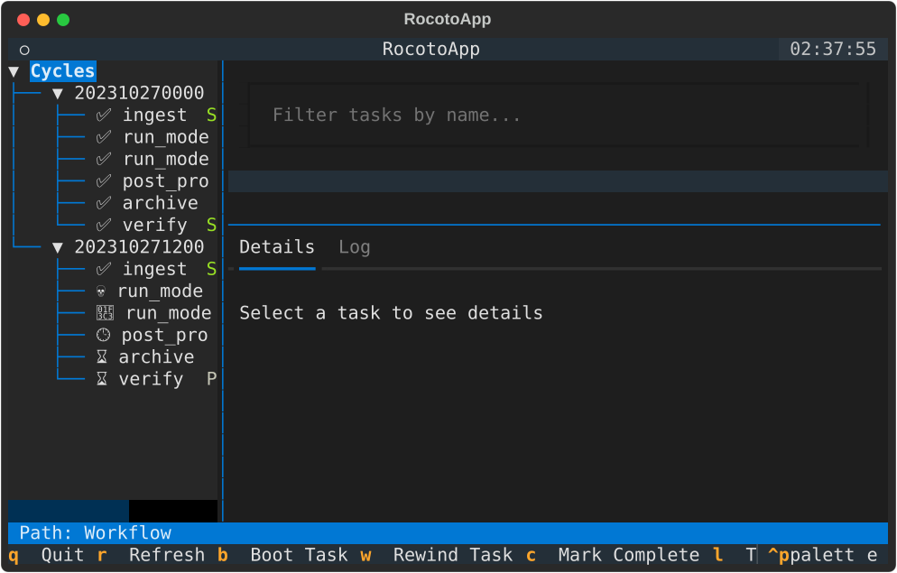
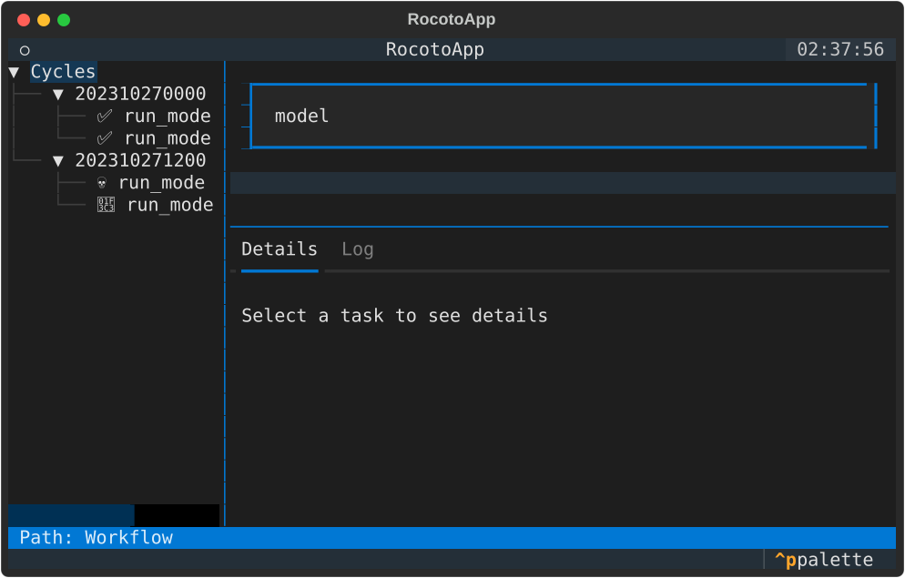
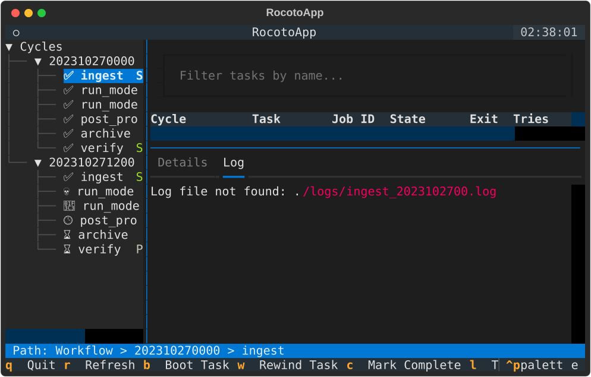

User Guide
This guide provides a detailed walkthrough of the RocotoViewer interface and its features.

Interface Overview
RocotoViewer's interface is divided into three main sections:
- Sidebar (Cycle Tree): Displays a hierarchical view of workflow cycles and their tasks. Each cycle can be expanded to see its tasks with icons and color-coded status (e.g., ✅ for SUCCEEDED, 🏃 for RUNNING, 💀 for DEAD).
- Selected Task Status: A concise table showing the status of the currently selected task, including Job ID, State, Exit code, Tries, and Duration.
- Inspection Panel (Tabbed): A tabbed container for detailed task information.
- Details Tab: Displays comprehensive information about the task, including command, log paths, and dependencies.
- Log Tab: Shows a live tail of the task's log file.
- Status Bar: Displays the "Path" to the currently selected item (e.g., Workflow > Cycle > Task).
Key Bindings
| Key | Action | Description |
|---|---|---|
q |
Quit | Exit the application. |
r |
Refresh | Manually trigger a data refresh from the XML and database. |
b |
Boot | Execute rocotoboot for the selected task (Placeholder). |
w |
Rewind | Execute rocotorewind for the selected task (Placeholder). |
c |
Complete | Mark the selected task as complete (Placeholder). |
l |
Toggle Log | Toggle between the Details and Log tabs. |
f |
Follow Log | Toggle automatic scrolling to the bottom of the log (Follow mode). |
Task Filtering
You can quickly find specific tasks using the filter input at the top of the main content area. Type any part of a task name to filter the visible tasks in the Cycle Tree.

Auto-Refresh
By default, RocotoViewer automatically refreshes the workflow status every 30 seconds. This ensures you have the latest information without manual intervention.
Inspecting Task Details
When you select a task in the Cycle Tree, the Details tab in the inspection panel updates with specific information for that task instance. This includes:
- Resolved Paths: Log paths and commands are automatically resolved based on the cycle.
- Resource Usage: Account, Queue, Walltime, and Memory requirements if specified.
- Dependencies: A list of task dependencies and their current status.
Log Viewing
RocotoViewer allows you to view task logs directly within the TUI. When a task is selected, you can switch to the Log tab (or press l) to see the log. If the log file exists, it will be loaded and tailed in real-time.

By default, Follow mode is enabled, meaning the view will automatically scroll as new content is added to the log. You can toggle this behavior by pressing f.